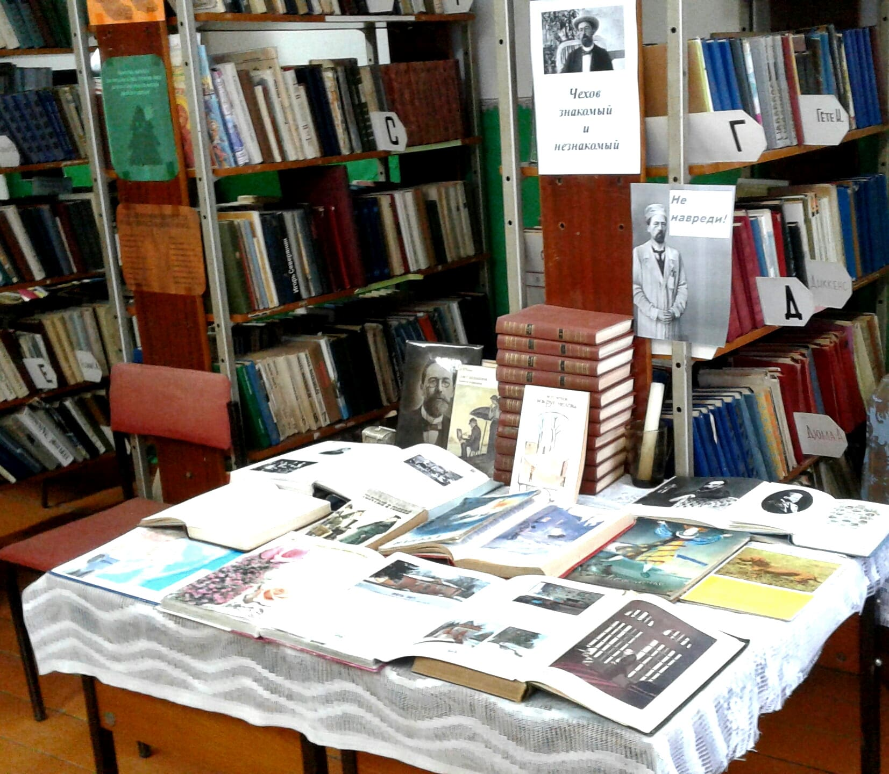
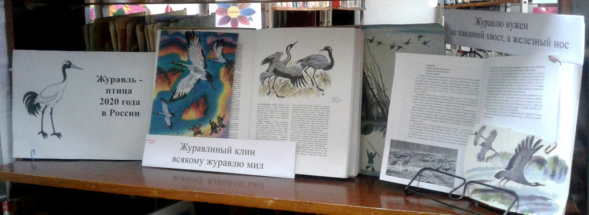

Новости
воскресенье, 12 апреля 2020 год
Уважаемые читатели!
В связи с коронавирусом выходные дни продляются до особого распоряжения. Берегите себя и своих родственников! Оставайтеся дома!
воскресенье, 5 апреля 2020 год
Уважаемые читатели!
В связи с коронавирусом выходные дни продлятся до 10 апреля включительно.
Берегите себя и своих родственников! Оставайтеся дома!
суббота, 28 марта 2020 год
Уважаемые читатели!
С 30 марта по 3 апреля по приказу № 21-од и в связи с коронавирусом в Краснопольской библиотеке будет выходная неделя.
С библиотекарем Фалалеевой Еленой Евгеньевной вы можете связаться ВКонтакте и Одноклассниках.
Берегите себя и своих родственников!
среда, 25 марта 2020 год
Итоги работы за 1-ый квартал 2020 года
Из 200 пользователей библиотеки
110 удалённых,
58 детей.
Посещений было 800,
из них 310 удалённых,
детьми — 276.
Книговыдача — 1625,
в том числе удалённым пользователям — 583,
детям — 527.
Проведено 68 мероприятий,
из них для детей — 42.
Выполнено 62 справки.
вторник, 24 марта 2020 год
У Краснопольской библиотеки появились группы в Одноклассниках и во ВКонтакте. Присоединяйтесь!
пятница, 20 марта 2020 год
Пока вы сидите на выходных, примите участие в викторине по литературе. Только не подглядывать!
Ссылка на формусреда, 18 марта 2020 год
С 18 марта в Краснопольской библиотеке выходные в связи с коронавирусом.

понедельник, 16 марта 2020 год

четверг, 12 марта 2020 год

четверг, 5 марта 2020 год

четверг, 27 февраля 2020 год

вторник, 18 февраля 2020 год
понедельник, 10 февраля 2020 год

воскресенье, 9 февраля 2020 год
Книжные новинки зимы 2020 года


Иванова, Оксана Михайловна. Приключения дракона и кота: 6+ / Оксана Иванова. - Москва : АСТ, 2019. - 140 с.
Обычный рыжий кот по имени Кот однажды находит необычное яйцо и спасает его от колдуньи. Теперь Коту придётся стать почти родной матерью. Ведь у несмышлёного дракончика, появившегося из яйца, больше никого нет. Кот мечтает стать волшебником и даже знает способ это сделать. Но страшный враг вмешивается в его планы. Удастся ли Коту исполнить мечту и уберечь от беды маленького дракона?


Матюшкина, Екатерина Александровна. Кот да Винчи. Похищение в день рождения: (сказочная повесть) /Катя Матюшкина. - Москва : АСТ, 2019. - 184 с.
Гениальный сыщик кот да Винчи ошарашен. Бывший злодей Зыза похищен на собственном дне рождения. В преступлении подозреваются потусторонние силы! А ведь Зызу предупреждали: не стоит селиться в проклятом особняке. Но кот да Винчи не боится сложностей и отважно берётся за расследование!
Трауб, Маша. Миллиграммы счастья: (роман:16+) / Маша Трауб. - Москва : Эксмо, 2019. - 314 с.
Талантливо, остроумно и искренне Маша пишет о том, из чего состоит жизнь любой женщины — случайных радостях и больших мечтах, мелких размолвках и недопонимании между самыми близкими, о взаимовыручке и поддержке, огорчениях и радостях. Герои книги — Машина семья. Ее муж Андрей, мама Ольга Ивановна, дочка Сима, которой только исполнилось девять лет, и семнадцатилетний сын Василий. Семей с похожими «вводными данными» — сотни тысяч по всей стране. Заглянув в дом к Маше Трауб, приглядевшись к быту ее домочадцев, многие читатели узнают в героях себя и своих близких. Маша по крупицам собрала те моменты, без которых жизнь была бы пресной и однообразной. День рождения дочери, школьный спектакль, родительские чаты, выбор места для летнего отдыха, посиделки у мамы на кухне, ежевечерние битвы над домашним заданием — из всего этого она выбрала миллиграммы счастья и написала книгу, которую с уверенностью можно рекомендовать как средство борьбы с осенней хандрой.

Алюшина, Татьяна Александровна. Будьте моей семьей: (роман: 16+) / Татьяна Алюшина. - Москва : Эксмо, 2020.- 314 с.
Артем — состоявшийся в жизни мужчина, сильный и мужественный, а семьи до сих пор нет. Он все чаще задумывается о сыне, но ни одна женщина не кажется ему подходящей на роль жены. Однажды Артем встречает Арину, красивую молодую маму, умную и независимую. К тому же та занимается интересным делом — шоколадным бизнесом, и сердце его тает. Он готов усыновить чужого ребенка и делает предложение, только есть одно важное "но", которое Арина никак не может принять...
понедельник, 3 февраля 2020 год
С 10 по 14 февраля Краснопольская библиотека участвует в четвёртой общероссийской акции «Дарите книги с любовью».
Объявляется конкурс плакатов ко Дню книгодарения. 14 февраля состоится подведение итогов конкурса.
Все работы будут опубликованы на сайте Краснопольской библиотеки.
пятница, 31 января 2020 год
Итоги 2019 года
В 2019 году было пользователей — 1418,
в том числе детей — 98,
в том числе удалённых пользователей сайта библиотеки — 1235.
Посещений — 4781,
в том числе детьми — 1354,
в том числе удалёнными пользователями сайта библиотеки — 2351,
в том числе посещений мероприятий — 1945.
Книговыдача — 16606,
в том числе детям — 2088,
в том числе удалённым пользователям сайта библиотеки — 11294.
В библиотеке прошло 239 мероприятий.
Спонсоры мероприятий — ПСПК «Краснопольский» и библиотекарь Фалалеева Е.Е.
Поступило в библиотеку 28 новых книг.
В фонде библиотеки 3633 книги.
Было 43 пользователя внутрисистемного книгообмена,
посещений ВСО — 355,
книговыдача ВСО — 650.
В декабре оформлена подписка за счет бюджета на газету «Бабья радость», журнал «Вот это истории», журналы «Саша и Маша», «Смешарики».
Депутат К.М. Гозман подарил подписку на газету «Родной край — Суна».
четверг, 30 января 2020 год

четверг, 30 января 2020 год
29 января библиотекарь провела беседу на дому «Немного о Чехове» и мини-викторину «Чеховская» для ребёнка с инвалидностью.

вторник, 28 января 2020 год
27 января 11 детей с воспитателем посетили занятие кружка «Библионик»: Литературный портрет «Юбилей Чехова». Сначала дети посмотрели слайд-фильм «Чехов и Россия» с комментариями библиотекаря, затем смотрели мультфильм «Ванька Жуков» по рассказу Чехова.
Дети сравнивали одежду, дома, транспорт в XIX веке и наши дни. Увидели, как все в доме сапожника издевались над 9-летним мальчишкой. Ребята познакомились с выставкой-просмотром «Чехов знакомый и незнакомый», посмотрели иллюстрации из книг писателя, портреты Чехова, усадьбу «Мелихово», увидели любимые деревья и цветы юбиляра, любимых такс.

27 января 11 детей и воспитатель на занятии кружка «Библионик» посмотрели и обсудили видео «День воинской славы. День снятия блокады Ленинграда».
понедельник, 27 января 2020 год
Краснопольская библиотека участвует в сетевой акции «ПоЧитатели Чехова» к 160-летию со дня рождения писателя.
пятница, 24 января 2020 год
23 января библиотекарь провела «Литературное ассорти» для восьми детей и воспитателя на кружке «Библионик». «К 110-летию Лии Гераскиной» — так называлась электронная презентация, включившая краткую биографию и викторину из 10 вопросов по книге «В Стране Невыученных уроков».
В электронной викторине «Дорогой сказок братьев Гримм» выиграл Семён Толмачёв, как и в первой.
среда, 22 января 2020 год
21 января библиотекарь оформила выставку-просмотр «Чехов знакомый и незнакомый» к 160-летию писателя.
пятница, 17 января 2020 год
пятница, 17 января 2020 год
16 января библиотекарь оформила книжную выставку «Журавль — птица 2020 года в России».
вторник, 14 января 2020 год
13 января 13 детей детсадовского возраста и воспитатель посетили занятие кружка «Библионик».
Библиотекарь провела для них День информации «Интересно. 2020 год — Год Крысы», где познакомила ребят с выставкой-просмотром «Книжные мышки к Году Мыши», на которой было представлено 13 книг, а электронный обзор книг «Год Мышки и про мышек книжки» включил 15 детских книг известных авторов разных стран.
Затем все посмотрели познавательный мультфильм «Уроки живой природы тётушки Совы. Крыса». В конце занятия было видео «Мыщкин и музей». В музее мыши этого интересного города можно увидеть больше 10000 мышек из различных материалов и стран.
четверг, 9 января 2020 год
8 января три подростка 13-14 лет участвовали в викторине «Под чистым небом Рождества». Выиграл Виталий Манылов.
среда, 8 января 2020 год
7 января в семье Суходоевых библиотекарь провела час весёлых затей к Году Мыши для пяти детей, в том числе для Суходоевой Тани и Суходоевой Даши.
Сначала дети познакомились с электронным обзором «Год Мышки и про мышек книжки». В котором было представлено 12 детских книг авторов из России, Англии, Японии, Италии, Норвегии. Среди них известные и мало знакомые: Маршак, Прёйсен, Бонд, И. Наумова, О. Тихомиров, Ивамура, Романова, ДиКамилло, Усачев, Медоус.
Затем ребята отвечали на две электронные викторины: «Викторина про мышей и крыс на Новый год по советским мультфильмам» и «Мышиная викторина». Все получали жетончики за правильные ответы.
Затем к ребятам присоединилась мама Светлана Александровна.
Все отвечали на электронную познавательную шанс-викторину «Обаяние вятской литературы» с фактами из жизни и творчества 12 вятских писателей, их фото, рисунками и красочными обложками их книг для детей.
Далее все участвовали в электронной познавательной шанс-викторине «Угадай художника по картине», где участники викторины пытали угадать картины таких известных художников: Репина, В. Васнецова, Перова, Кустодиева, Шишкина, Айвазовского, Шагала, Никаса Сафронова, Ван Гога и других. О каждом художнике рассказывались интересные факты.
Затем семья показала свои знания популярного детского мультфильма, отвечая на электронный тест «Смешарики. Угадай, чья фраза».
Так же игроки поучаствовали в шуточных предсказаниях «Какое у вас супергеройское имя?», «Ваш весёлый титул» и «В чём вы особенно хороши».
Наконец все приняли участие в конкурсе «Маска, я тебя знаю». Библиотекарь по очереди надевала маски волка, лисы, тигра, чёрта, зайца, колобка, козы и кошки маме, ребятам и двоюродной сестре. Игроки задавали вопросы и пытались угадать, что за маска.
В конце развлечений все пили чай с пиццей.
суббота, 4 января 2020 год
3 января три девушки приняли участие в игре-викторине «Паутина» на тему «Заповедники — эталоны живой природы». С большим преимуществом выиграла Рита Онегова.
3 января они же приняли участие в викторинах «Современные мультфильмы», а в викторине «Лунтик» присоединился молодой парень.
3 января начался цикл плакатов «Писатели-юбиляры 2020 года»: «5 января — 100 лет детскому писателю Николаю Сладкову» и «95 лет английскому ученому и писателю-натуралисту Дарреллу».
пятница, 3 января 2020 год
2 января прошла игра-викторина «Паутина» на дому у Тани Суходоевой, девочки 9 лет с инвалидностью, одной её сестры и брата. Тема викторины была: «Заповедники — эталоны живой природы» с вопросами о российских заповедниках, в частности о заповеднике «Нургуш» в Кировской области. Дети расширили знания о заповедных землях России.
2 января там же библиотекарь провела викторину «Санта Клаус и Дед Мороз». Выиграла Таня.